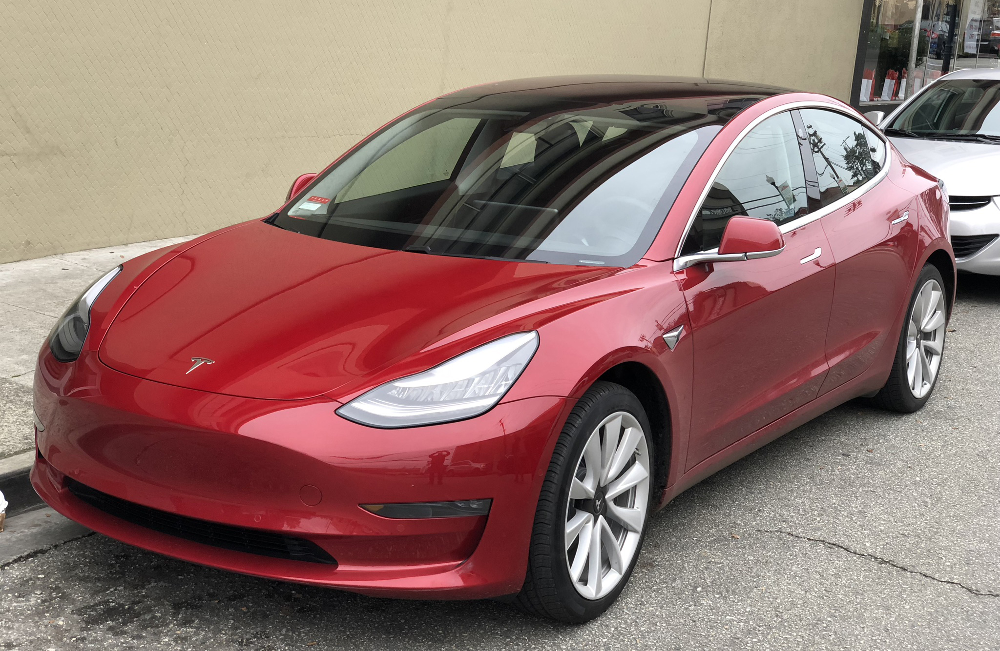

Марки авто
 Tesla Model S - Tesla Model S — пятидверный электромобиль производства американской компании Tesla. Прототип был впервые показан на Франкфуртском автосалоне в 2009 году; поставки автомобиля в США начались в июне 2012 года.
 Tesla Model X - Tesla Model X — полноразмерный электрический кроссовер производства компании Tesla. Прототип был впервые показан в Лос-Анджелесе 9 февраля 2012 года. Коммерческие поставки начались 29 сентября 2015 года.
Tesla Model X - Tesla Model X — полноразмерный электрический кроссовер производства компании Tesla. Прототип был впервые показан в Лос-Анджелесе 9 февраля 2012 года. Коммерческие поставки начались 29 сентября 2015 года.
Tesla Model Y - Tesla Model Y — электрический кроссовер производства компании Tesla. Модель была представлена в марте 2019 года, серийное производство начато на фабрике во Фримонте в январе 2020, а поставки потребителям с 13 марта 2020. ... Model Y предлагается с опциональным третьим рядом сидений в семиместной конфигурации.
 Porsche Taycan - Porsche Taycan (внутреннее обозначение Porsche Mission E) — полностью электрическое 4-дверное купе, разработанное компанией Porsche. Концепт-кар впервые был показан на Международном автомобильном салоне во Франкфурте в 2015 году[3][4]. Это первый полноценный электромобиль Porsche[5].
Porsche Taycan - Porsche Taycan (внутреннее обозначение Porsche Mission E) — полностью электрическое 4-дверное купе, разработанное компанией Porsche. Концепт-кар впервые был показан на Международном автомобильном салоне во Франкфурте в 2015 году[3][4]. Это первый полноценный электромобиль Porsche[5].
Porshe 991 Porsche 991 — внутреннее обозначение для седьмого поколения Porsche 911, который был представлен во Франкфуртском автосалоне 15 сентября 2011 года в качестве замены 997[1]. Первые фотографии и информация были найдены 23 августа 2011 года.
Porshe 911 - Porsche 911 (нем. Neunelfer) — спортивный автомобиль производства немецкой компании Porsche AG в кузове двухдверное купе или кабриолет на его основе, в разных поколениях производящегося с 1964 года по наши дни..
 Audi RS 7 - спортивный пятидверный фастбэк класса Гран Туризмо выпускаемый подразделением Audi Sport GmbH на платформе Audi A7[1]. Автомобиль был представлен 16 января 2013 года на Североамериканском международном салоне в Детройте[2]. Самая мощная и дорогая по цене спортивная версия модели представительского фастбэка Audi A7, характеристики которой равны автомобилю класса суперкаров (серия RS)[3][4]. Существует менее мощная спортивная версия Audi S7 (серия S).
Audi RS 7 - спортивный пятидверный фастбэк класса Гран Туризмо выпускаемый подразделением Audi Sport GmbH на платформе Audi A7[1]. Автомобиль был представлен 16 января 2013 года на Североамериканском международном салоне в Детройте[2]. Самая мощная и дорогая по цене спортивная версия модели представительского фастбэка Audi A7, характеристики которой равны автомобилю класса суперкаров (серия RS)[3][4]. Существует менее мощная спортивная версия Audi S7 (серия S).
 Audi Q8 - спортивный кроссовер от немецкого производителя автомобилей Audi. Концепт Audi Q8 был представлен публике 9 января 2017 года на Североамериканском международном автосалоне (NAIAS) в Детройте, США. Премьера серийной версии состоялась в мае 2018 года на Шеньчженьском автосалоне в Китае[2]. Спортивная версия RS Q8 будет показана позже на Женевском автосалоне[3]. Тестирование спортивных версий Q8 - SQ8 и RS Q8 уже проходят[4].
Audi Q8 - спортивный кроссовер от немецкого производителя автомобилей Audi. Концепт Audi Q8 был представлен публике 9 января 2017 года на Североамериканском международном автосалоне (NAIAS) в Детройте, США. Премьера серийной версии состоялась в мае 2018 года на Шеньчженьском автосалоне в Китае[2]. Спортивная версия RS Q8 будет показана позже на Женевском автосалоне[3]. Тестирование спортивных версий Q8 - SQ8 и RS Q8 уже проходят[4].
 Audi 100 - название семейства легковых автомобилей бизнес-класса, производившихся в ФРГ компанией Audi с 1968 по 1994 годы. Все поколения модели имели определённую техническую преемственность между собой и сохраняли заложенные с самого появления модели базовые принципы — в первую очередь, переднеприводную компоновку с продольным расположением двигателя. Audi 100 C3 продавалась в США под названием Audi 5000 до 1988 года.
Модель Audi 200 представляла собой более дорогую версию Audi 100, отличавшуюся повышенным уровнем базовой комплектации, улучшенной внешней и внутренней отделкой, оснащалась только пятицилиндровыми двигателями, в том числе — с турбонаддувом.
Audi 100 - название семейства легковых автомобилей бизнес-класса, производившихся в ФРГ компанией Audi с 1968 по 1994 годы. Все поколения модели имели определённую техническую преемственность между собой и сохраняли заложенные с самого появления модели базовые принципы — в первую очередь, переднеприводную компоновку с продольным расположением двигателя. Audi 100 C3 продавалась в США под названием Audi 5000 до 1988 года.
Модель Audi 200 представляла собой более дорогую версию Audi 100, отличавшуюся повышенным уровнем базовой комплектации, улучшенной внешней и внутренней отделкой, оснащалась только пятицилиндровыми двигателями, в том числе — с турбонаддувом.